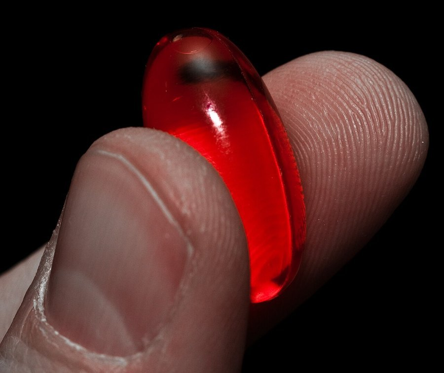

Saw Palmetto: What the Evidence Actually Shows
Saw palmetto is one of the most widely used supplements for prostate symptoms, and also one of the most thoroughly tested. The results from that testing are more mixed than the marketing suggests.

Key takeaways
- The largest, most rigorous trials generally found saw palmetto performs no better than a placebo for enlarged prostate symptoms, even though some smaller studies reported benefit.
- Most research used 320 mg per day of a standardized extract, so lower or unstandardized doses have less evidence behind them.
- It hasn't been shown to meaningfully lower blood testosterone in clinical trials, despite a related biological theory.
- Side effects are generally mild, with fewer sexual side effects reported than some prescription BPH medications.
- Urinary symptoms can have other causes, so a proper diagnosis matters before assuming saw palmetto is the right approach.
Saw palmetto's evidence for enlarged prostate symptoms is genuinely mixed: some earlier and industry-funded trials reported symptom relief, but the largest, most rigorous independent trials, including a major multi-year study funded by the National Institutes of Health, found it performed no better than a placebo. It's generally well tolerated, with few side effects, but that doesn't offset the inconsistent evidence for effectiveness.
Here's what the actual trials measured, how the dose matters, and where saw palmetto is a reasonable thing to try versus where it's overstated.
What is saw palmetto, and why is it used?
Saw palmetto is the fruit of a small palm native to the southeastern United States. Its extract has been used for decades, mostly for symptoms of benign prostatic hyperplasia, commonly called an enlarged prostate, including frequent urination, a weak stream and needing to get up at night to urinate. The proposed mechanism involves mildly affecting how the body processes testosterone at the tissue level, a similar target to some prescription BPH drugs, though the strength of that effect in saw palmetto is far smaller and less certain.
Does saw palmetto actually help with enlarged prostate symptoms?
This is where the evidence gets genuinely complicated. A number of earlier, often smaller or industry-sponsored trials reported real improvement in urinary symptom scores. But a large, independent, NIH-funded trial that specifically used the standardized dose and extract type from the more promising earlier studies found no significant difference between saw palmetto and a placebo, even at higher-than-usual doses. Systematic reviews pooling many trials together have landed on a similarly unimpressive overall picture: modest effects in some analyses, none in others, with study quality and funding source correlating suspiciously well with how positive the results were.
The honest summary: saw palmetto might offer a small benefit for some people, but the best available evidence doesn't support it as a reliably effective treatment for BPH symptoms.
How does it compare to prescription BPH medications?
| Saw palmetto | Prescription BPH medications | |
|---|---|---|
| Evidence for effectiveness | Mixed; largest independent trials show no benefit over placebo | Well established in large clinical trials |
| Common side effects | Mild, infrequent (stomach upset, headache) | Can include sexual side effects, dizziness, low blood pressure |
| Requires a prescription | No | Yes |
| Monitoring needed | Minimal | Often requires follow-up and dose adjustment |
Saw palmetto's milder side-effect profile is a genuine advantage, but it doesn't make up for the effectiveness gap. Someone with bothersome BPH symptoms is generally better served starting with a doctor's evaluation, which can confirm the diagnosis and lay out medication options with a much stronger evidence base, than reaching for saw palmetto as a first move.
Does saw palmetto affect testosterone?
Not in a way clinical trials have been able to detect. Blood testosterone levels in saw palmetto trials have generally stayed essentially unchanged compared with placebo. The proposed mechanism involves a localized effect on how testosterone is converted and used in prostate (and possibly scalp) tissue specifically, not a body-wide hormone shift, which is consistent with trials not finding a measurable change in blood hormone levels. Readers curious about typical hormone ranges by age can see our guide to testosterone levels by age.
What's the right dose, and does the form matter?
Most clinical trials used 320 mg per day of a standardized liposterolic (fat-soluble) extract, taken as one daily dose or split into two. This standardization matters more than it sounds: saw palmetto products vary widely in how they're extracted and what proportion of active fatty acids and sterols they contain, so two products both labeled "saw palmetto 320 mg" aren't necessarily equivalent. Checking for a standardized extract, often listed as a percentage of fatty acids and sterols on the label, is a reasonable way to match what was actually studied.
How long does it take to notice a difference?
Trials generally measured symptom scores somewhere between 4 and 12 weeks of daily use, with some running up to a year. If you try saw palmetto and haven't noticed any change in urinary symptoms after about three months at a standard, standardized dose, the trial evidence suggests it's unlikely to start working after that, and it's reasonable to stop and discuss other options with a doctor.
Are there side effects or interactions to know about?
Reported side effects are generally mild and infrequent: mild stomach upset, headache, or dizziness in a small percentage of users. It's considered to have a low risk of drug interactions, though it may theoretically add to the effect of blood-thinning medications, so anyone on warfarin or similar drugs should mention it to their doctor or pharmacist before starting. It isn't recommended during pregnancy or breastfeeding due to its hormone-related mechanism and lack of safety data in that group.
Does saw palmetto help with hair loss too?
It's used for this for a related reason: the same testosterone-processing theory behind its prostate use has led some to try it for male pattern hair loss, which shares a hormonal pathway. A handful of small studies have reported modest improvements in hair density or hair loss scores, but this research base is smaller and less consistent than even the mixed prostate evidence. It's reasonable to view it as a low-risk, low-confidence option here rather than a proven treatment, and approved options like minoxidil or finasteride have much stronger evidence behind them.
Who should skip saw palmetto or talk to a doctor first?
- Anyone with new urinary symptoms who hasn't been evaluated: similar symptoms can come from infection, bladder issues, or, less commonly, prostate cancer, and need a proper diagnosis first.
- People on blood thinners: saw palmetto may theoretically add to the effect, so check with a doctor or pharmacist.
- Anyone scheduled for surgery: as a precaution against any clotting-related interaction, it's often recommended to stop it 1 to 2 weeks beforehand.
- Pregnant or breastfeeding people: there isn't sufficient safety data, and the hormone-related mechanism is a reasonable cause for caution.
What does the overall evidence add up to?
Saw palmetto is low-risk, well tolerated for most people, and inconsistently effective, with the largest and most rigorous trials showing no clear advantage over a placebo for BPH symptoms. It's a reasonable, low-stakes thing for some people to try with realistic expectations and a three-month cutoff for deciding whether it's doing anything. It should not replace a proper medical evaluation for new or worsening urinary symptoms, since the supplement's biggest limitation isn't safety, it's that the evidence for actually working is thinner than its popularity suggests.
Frequently asked questions
Does saw palmetto really shrink an enlarged prostate?
No strong evidence shows it shrinks the prostate. Some smaller or industry-funded trials report modest symptom relief, like less nighttime urination, but the largest, most rigorous independent trials have generally found saw palmetto performs no better than a placebo.
How long does it take to know if saw palmetto is working?
Most trials measured symptoms after 4 to 12 weeks of daily use. If you don't notice any change in urinary symptoms after about three months at a standard dose, it's reasonable to conclude it isn't working for you.
Does saw palmetto lower testosterone?
Clinical trial data hasn't shown a meaningful drop in blood testosterone levels with typical saw palmetto doses. It may mildly affect how testosterone is processed at the tissue level, which is the theory behind its use for prostate and hair concerns, but this hasn't translated into measurable hormone changes in trials.
Is saw palmetto safer than prescription BPH medication?
It has a generally mild side-effect profile in trials, with fewer sexual side effects reported than with some prescription options. That's not the same as saying it works as well. Effectiveness and side-effect profile are two separate questions, and saw palmetto's modest, inconsistent effectiveness data is the bigger issue.
Can saw palmetto help with hair loss?
A few small studies suggest a possible modest benefit for hair density in male pattern hair loss, using a similar theory to its prostate use. The research is much smaller and less consistent than the prostate evidence, which is itself mixed, so expectations should be modest.
What dose of saw palmetto is typically used?
Most clinical trials used 320 mg per day of a standardized liposterolic extract, either as one dose or split into two. Products vary in concentration and extraction method, so the labeled milligram amount isn't always comparable between brands.
Should I talk to a doctor before trying saw palmetto?
Yes, especially before assuming your urinary symptoms are simply an enlarged prostate. Similar symptoms can come from a urinary tract infection, bladder issue or, less commonly, prostate cancer, and those need a proper diagnosis rather than a supplement tried on a guess.
Related: Enlarged prostate symptoms: when to see a doctor · Zinc for men: benefits and dosage · Testosterone levels by age
Image: Geoffrey Fairchild from Iowa City, IA, USA / Wikimedia Commons / CC BY 2.0